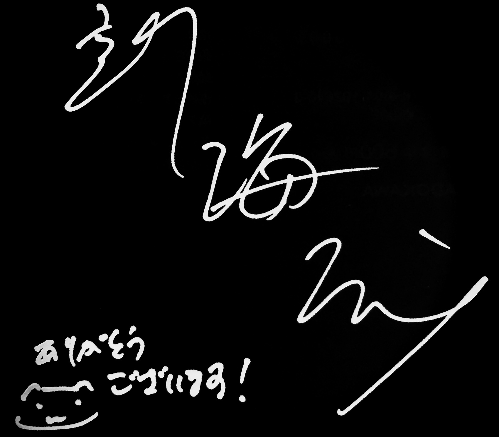

Makoto Shinkai

A portrait of Makoto Shinkai
A Timeline of Makoto Shinkai's life
- 1973 - Born as Makoto Niitsu.
- 1994 - Graduated from Chuo University Faculty of Literature. Started a job at Falcom.
- 1999 - Released "She and her Cat", a five minute short movie.
- 2000 - Won the Grand Prize at the 12th DoGA CG Animation Contest, quit his job at Falcom afterwards.
- 2004 - Released "The Place Promised in Our Early Days".
- 2007 - Released "5 Centimeters per Second".
- 2011 - Released "Children Who Chase Lost Voices from Deep Below".
- 2013 - Released "The Garden of Words".
- 2016 - Released "Your Name".
- 2019 - Released "Weathering with You"
Learn more about this artist at this Wikipedia Entry.